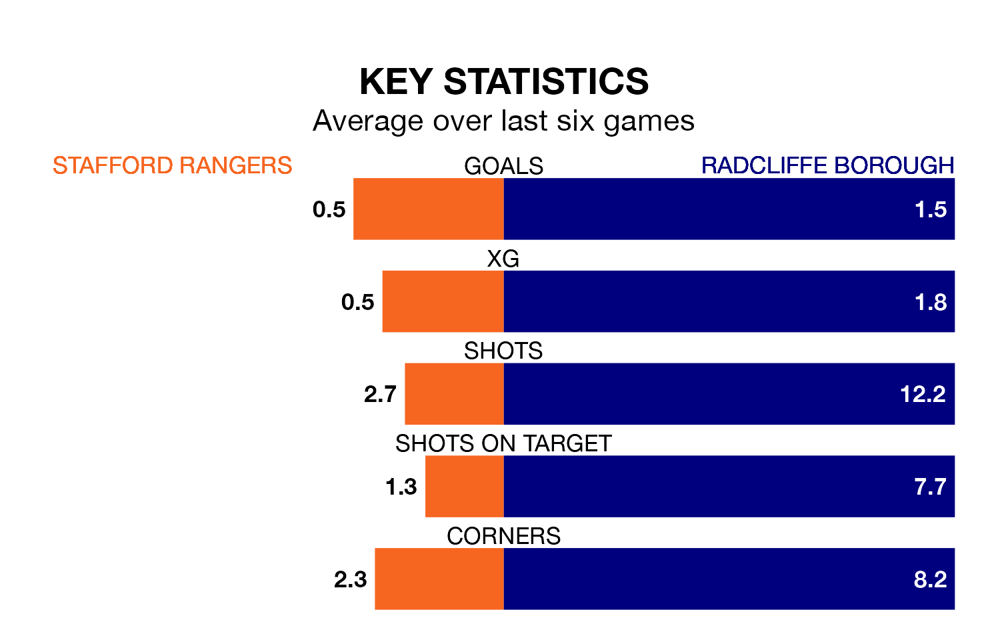

Radcliffe Borough travel to Marston Road for Saturday's match against Stafford Rangers looking to bounce back from defeat last time out in the Northern Premier League.
The Boro, who sit top of the league after 33 games, fell to a 1-0 away defeat to Guiseley on March 9.
They face a Stafford side who also lost their last match, a 1-0 defeat to Bradford Park Avenue, and who sit 21st in the table.
With 87 goals in 33 games so far this season, Radcliffe are the league's highest scorers with 2.6 goals per game. And they are conceding fewer than average, letting in 47 goals at a rate of 1.4 per game.
Stafford, meanwhile, are below average scorers, with 1.0 goal per game, compared to a league average of 1.6. They have conceded 2.1 goals per game.
In the last 10 years, Stafford and Radcliffe have played each other on six occasions. Stafford won four of them, Radcliffe one, and they drew once.
On average, Stafford scored 1.2 goals and the Boro 0.5 in those matches.
Their last meeting was on October 24, when Radcliffe won 3-1 at home.
Rangers are in bad form in the Northern Premier League, with one win and a draw from their last six games.
With three wins and two draws over that period, Borough's form is much better – they have taken 11 points from 18, compared to the home side's four.
Updated: 15:10 (UTC), 15/03/24